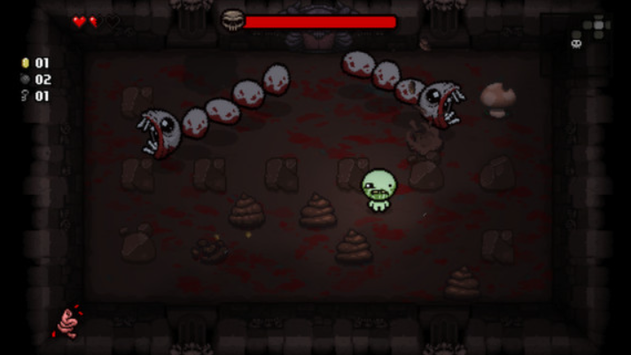

Sobre el juego:
Cuando la madre de Isaac comienza a escuchar la voz de Dios que exige que se haga un sacrificio para probar su fe, Isaac escapa al sótano y se enfrenta a multitudes de enemigos trastornados, hermanos y hermanas perdidos, sus miedos y, finalmente, a su madre. Es un juego de rol de acción generado aleatoriamente con fuertes elementos roguelike. Los jugadores acompañarán a Isaac en una búsqueda para escapar de su madre, enfrentándose a hordas de criaturas misteriosas, descubriendo secretos y luchando contra temibles jefes. En el camino, Isaac puede encontrar extraños tesoros que cambian su forma y le otorgan habilidades sobrehumanas. ¡Pero no será fácil!

Link de descarga
Ultimo Juego
The Binding of Isaac: Repentance
Experimenta el clásico moderno, The Binding of Isaac, como nunca antes lo habías visto. Es un juego demasiado grande para ser llamado una secuela: ¡Repentance lleva a Isaac a nuevas alturas de aventuras de mazmorras roguelike, mientras el valiente niño desciende al sótano para su mayor desafío hasta el momento! La nueva búsqueda de Isaac lo lleva a lugares desconocidos en los que nunca ha estado, llenos de horribles nuevos enemigos y jefes, combos de armas que nunca antes ha combinado y elementos que nunca ha visto... ¡terrores profanos de sus sueños más salvajes y peores pesadillas!